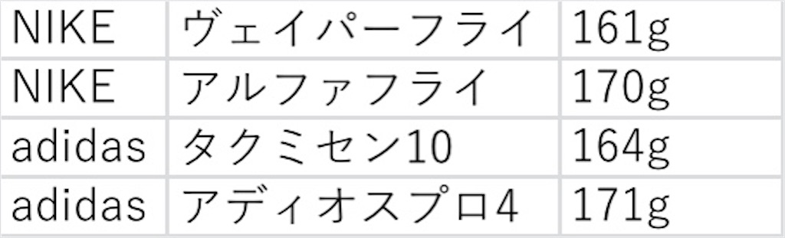
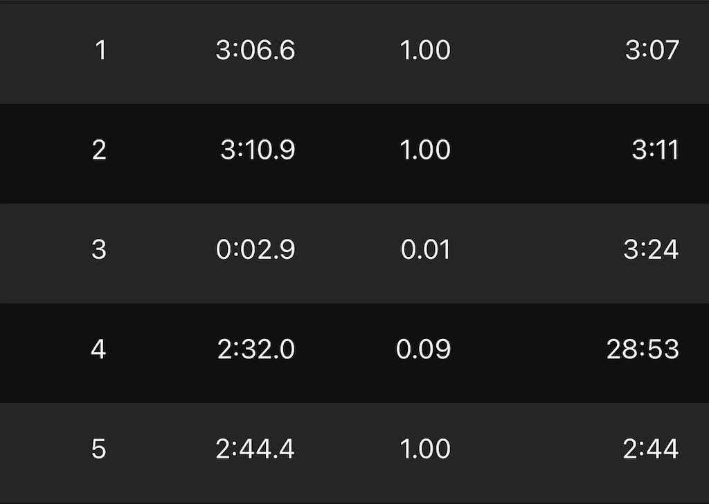

アディオスプロ4はアディオスEVO1から発想を得て開発された、
ロッカーポイント構造を取り入れています。
これが何かと言うと、
シューズの前足部60%が上向きに向いている構造で、自然と前方向に推進力を生み出す構造です。
また、アウトソールについてもアップデートがあり、プロ3やタクミセンシリーズのソールと異なり
かなり柔らかいソールに変わりました。
- 価格：28,600円 最近3万、4万円台のレーシングシューズが出ている中では良心的な価格になっています。 この値段ならまだ手が出しやすいですね。初代のヴェイパーネクストと同じくらいの値段なので、 普段高い靴を買わない私ですがレース用の1足と思えば私も買おうと思えます。(初代ヴェイパーネクストは2足買いました)
- 重さ：171g(24.5cm) さて、シューズの重さはどうでしょうか。私は履いてる時に重いなとかあまり気になりませんが、 気にする方が多いそうなので私のサイズ(24.5cm)で比較してみます。 重さとしては他の厚底シューズと変わりません。 プロ3を履いたことがないので比較はできませんが、特に違和感はないと思います。 
- サイズ感： 気になるサイズ感については、他のシューズと変わりませんでした。 プロ3は若干大きめらしくハーフサイズ下げたり、他のアディダスのシューズも大きめが多いので私自身もハーフサイズ下げて購入したものもありましたが、 プロ4に関しては他のシューズと同じサイズ感でピッタリでした。 更にアディダスのシューズで不満がある 踵のフィット感も問題なく、むしろフィット感は高く、ズレるということもありませんでした。 どちらにしろ試し履きする事をおすすめします。
履いた感想
気になる実際の履いた感想です。反発は NIKEのアルファフライくらい
かなり反発があります。ただ安定感もあり、グラつく感じはありません。
前足部が反り上がっているため、転がる感じがあるかというと、それもそこまでではありません。(この転がる感じがあまり好きではない)
更にソールもかなり柔らかく、足への負担も少なそうです。

まだ練習で軽くしか履いていませんが、
一個難点を上げるならマラソンの後半で足が疲れた時に、反発が強すぎて上手くコントロールができない可能性ですかね。
ただこれはNIKEのアルファフライでも最初言われており、私もそれを懸念していましたが実際にマラソンで履いてみると問題なかったので、
気にするほどではないかと思います。私はマラソンのメインは現在アルファフライですが、そろそろ履き潰してきており、
後は何といってもエアのパンクが怖いため、最初から次はアディオスプロを買おうと思っていました。
反発もあり評判も良かったからです。実際に履いてみた感想もかなりいいのでとてもおすすめです。
後は耐久性を今後は見ていこうと思います。

練習では2000(6'15)+1000(2'45)をやりました。
マラソン後で疲労がありましたがやれたので、かなり靴の性能はいいと思います。

アディゼロ アディオス プロ 4 ADIZERO ADIOS PRO 4 クラウドホワイト/コアブラック/シルバーメタリック
adidasの最新レーシングシューズ。軽量で反発性に優れた厚底モデル。